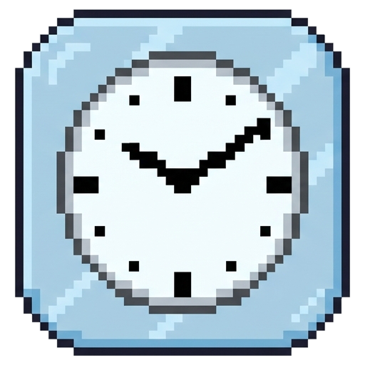

我要第一个溜
/ 下班倒计时
正在读取日期
连接中
距离下班还有
--
:
--
:
--
小时
分钟
秒
把时间留一点给生活。
开饭倒计时
🍚
按时吃饭，好好休息
--:--:--
正在同步
今日进度
--
%
好好吃饭，才有力气下班
正在同步
距离下班
--:--
--%
快捷操作
×
展开
设置
置顶
隐藏
MAKE TIME FOR LIFE
按你的节奏来
设置好时间，剩下的交给我。
上班时间
下班时间
午休开始
午休结束
外卖提醒
每天最多一次，错过不补发
提醒时间
开机自动启动
登录电脑后，自动开始倒计时
窗口始终置顶
在其他窗口上方显示挂件
显示本机 IP
在左下角显示私有 IPv4 地址末段
每天按设置的上下班和午休时间计算
取消
保存设置
↗